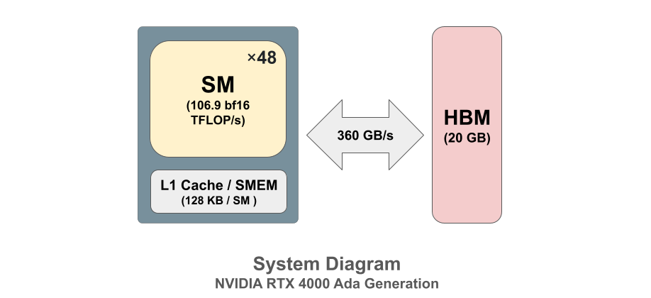

How to Write a Flash Attention Kernel in Pallas¶
In the previous posts in this series, we learnt how to write a matrix multiplication kernel and a softmax kernel using Pallas. Building on these, we will design a fused self-attention kernel. Self-attention is a major bottleneck in deep learning architectures. In a naive implementation, materializing the full \(T \times T\) attention matrix requires \(O(T^2)\) memory bandwidth. This creates a severe bottleneck on GPUs, as the time to transfer this data from high-bandwidth memory (HBM) dominates over the actual computation time.
Self Attention¶
Mathematically, the self-attention operation is \(\text{softmax}(QK^T/\sqrt{d}) V\), where \(Q\) is a set of queries, \(K\) is a set of keys and \(V\) is a set of values.
\(Q\) is usually a tensor of shape \((B, H, T, D)\), where \(B\) is batch size, \(H\) is number of heads, \(T\) is sequence length, and \(D\) is the embedding dimension (or head dimension). Each query vector represents a position in the sequence that attends to keys. Keys are used to compute attention scores with queries while values are the information retrieved based on attention weights. Scaling by \(1/\sqrt{d}\) stabilizes the variance, ensuring the softmax behaves similarly across different embedding dimensions, improving optimization and generalization.
To understand self-attention in more detail, here’s an excellent blogpost by Sebastian Raschka.
Minimal GPU System Architecture¶
To test our implementation, we will use an NVIDIA RTX 4000 Ada Generation GPU. This is a fairly powerful (and cheap!) GPU with a modern architecture. Let’s build a simple model of its system architecture. This will help us understand compute and memory tradeoffs involved.

Memory Hierarchy¶
SMEM/L1 cache is the fastest memory, orders of magnitude faster than HBM. Crucially, it’s software-managed—we explicitly control what gets loaded and stored via plgpu.load and plgpu.store in our Pallas kernels. Each SM has its own 128 KB (99 KB SMEM + L1 Cache), isolated from others. This is where flash attention keeps intermediate tiles, attention score tiles, and accumulators.
L2 cache (48 MB) sits in the middle. However, it’s hardware-managed. All SMs compete for this shared space, and hardware may evict data between operations. The kernel design assumes data lives in SMEM or HBM only.
HBM (20 GB) is the slowest memory at 360 GB/s, but it has the largest capacity. This stores all our tensors, \(Q\), \(K\), \(V\) inputs, \(O\) outputs, and gradients \(dQ, dK, dV\). Every read or write to HBM costs execution time, so minimizing HBM transfers is critical for performance. Flash attention reads \(Q\), \(K\), \(V\) from HBM once and writes \(O\) to HBM once—everything else stays in SMEM.
Naive Self-Attention¶
import jax
import jax.numpy as jnp
@jax.jit
def naive_attention(q, k, v):
d = q.shape[-1]
logits = jnp.einsum('bhqd,bhkd->bhqk', q, k) / jnp.sqrt(d)
probs = jax.nn.softmax(logits, axis=-1)
o = jnp.einsum('bhqk,bhkd->bhqd', probs, v)
return o
B, H, T, C = 2, 4, 256, 64
key = jax.random.key(0)
keys = jax.random.split(key, 4)
# Use bfloat16 for optimal performance
q = jax.random.normal(keys[0], (B, H, T, C), dtype=jnp.bfloat16)
k = jax.random.normal(keys[1], (B, H, T, C), dtype=jnp.bfloat16)
v = jax.random.normal(keys[2], (B, H, T, C), dtype=jnp.bfloat16)
do = jax.random.normal(keys[3], (B, H, T, C), dtype=jnp.bfloat16)
# Forward check
o_ref = naive_attention(q, k, v)
print(f"Reference output shape: {o_ref.shape}")
# Backward check
def loss_ref(q, k, v):
return jnp.sum(naive_attention(q, k, v) * do)
dq_ref, dk_ref, dv_ref = jax.grad(loss_ref, argnums=(0, 1, 2))(q, k, v)
print(f"Reference gradient shapes: dq={dq_ref.shape}, dk={dk_ref.shape}, dv={dv_ref.shape}")
W0127 08:15:20.617041 2432 cuda_executor.cc:1802] GPU interconnect information not available: INTERNAL: NVML doesn't support extracting fabric info or NVLink is not used by the device.
W0127 08:15:20.619851 2217 cuda_executor.cc:1802] GPU interconnect information not available: INTERNAL: NVML doesn't support extracting fabric info or NVLink is not used by the device.
Reference output shape: (2, 4, 256, 64)
Reference gradient shapes: dq=(2, 4, 256, 64), dk=(2, 4, 256, 64), dv=(2, 4, 256, 64)
Why it is Slow¶
The naive implementation must handle a \((T, T)\) attention matrix that quickly exceeds GPU shared memory (SMEM) capacity.
T |
\((T, T)\) matrix (bf16) |
Fits in SMEM? |
|---|---|---|
128 |
32KB |
Yes (barely) |
256 |
128KB |
No |
For \(T \geq 256\), the attention matrix must be materialized in HBM. Here’s the actual data flow:
Read \(Q, K, V\) from HBM
Compute \(QK^T\) in tiles (each tile fits in SMEM), write each tile to HBM as it completes
Read the \((T, T)\) matrix from HBM row-by-row for softmax: first pass computes row max, second pass computes
exp(x - max), sum, and normalizesWrite softmax output to HBM
Read softmax output from HBM for \(PV\) (tiled)
Write final output O to HBM
The matmuls use tiling internally—small blocks are loaded into SMEM, computed, and written back—but the full \((T, T)\) result must still be materialized in HBM between operations.
Softmax processes one row at a time (\(T\) elements easily fit in SMEM), but requires two passes through each row: once to find the maximum value, and again to compute the normalized probabilities. This means the \((T,T)\) matrix is read twice during the softmax operation alone.
Flash Attention Algorithm (Forward Pass)¶
The key insight is that we can compute the attention output without ever materializing the full \((T,T)\) attention matrix in HBM. Instead, we process it in small tiles that fit in SMEM, discarding each tile after using it. Let \(B_r\) and \(B_c\) denote the tile sizes for rows (queries) and columns (keys) respectively.
Tile \(Q\) into \(T/B_r\) blocks and process them in parallel across the outer loop
For each query block, initialize running max \(m\), sum \(l\), and output accumulator \(o\) to zero
Tile \(K\) and \(V\) into \(T/B_c\) blocks and process them sequentially in the inner loop
Load \(Q\) tile \((B_r,D)\), \(K\) tile \((B_c,D)\), and \(V\) tile \((B_c,D)\) into SMEM
Compute \(QK^T\) to produce a \((B_r,B_c)\) attention tile in SMEM
Apply online softmax using running statistics:
Find the maximum \(m_{blk}\) of the current tile
Update the running max: \(m = \max(m, m_{blk})\)
Exponentiate the shifted scores: \(\exp(S - m)\)
Update the running sum: \(l = l \cdot \exp(m_{old} - m) + \sum \exp(S - m)\)
Multiply the softmax result with \(V\) and accumulate into the output
Apply correction factor to both the running statistics and output accumulator when the maximum changes
After processing all \(K/V\) tiles for a query block, perform final normalization
Write the final output \((T,D)\) to HBM once
Check out the Pallas softmax kernel implementation to understand the online softmax algorithm.
The Logsumexp Trick¶
The logsumexp trick is what enables the flash attention backward pass to avoid recomputing the softmax statistics. During the forward pass, we compute and store logsumexp values alongside the output.
Starting from the softmax definition:
Let \(l = \sum_j \exp(S_j - m)\). Then:
Let \(\text{logsumexp} = m + \log l\)
Precision Optimization: From Float32 to Bfloat16¶
A key optimization in our implementation is the careful management of numerical precision. The naive approach of casting everything to float32 wastes memory bandwidth, while pure bfloat16 causes numerical instability. Our optimized approach uses mixed precision: bfloat16 for memory transfers and tensor core operations, float32 for sensitive intermediate computations.
Operation |
Dtype |
Reason |
|---|---|---|
Load Q, K, V, dO |
bf16 |
Half the memory bandwidth |
Matmul inputs |
bf16 |
Fast bf16 tensor cores |
Matmul outputs |
float32 |
Tensor cores accumulate in float32 |
Softmax (exp, max, sum) |
float32 |
Numerical stability |
Running accumulators |
float32 |
Avoid precision loss across blocks |
Store outputs |
bf16 |
Match input dtype |
Why Certain Values Must Stay Float32¶
Running max (max_reg): Could technically be bf16 since it’s just tracking maximums, but keeping it float32 costs nothing (only BLOCK_R=64 elements) and avoids edge cases.
Running sum (l_reg): Must be float32. It accumulates across all K blocks:
l_reg = l_reg * jnp.exp(max_reg - max_blk) + l_blk
With T=1024 and BLOCK_C=64, that’s 64 iterations. Bf16 would lose small contributions when adding to large sums.
Logsumexp: Used in backward pass as exp(s_blk - logsumexp). Errors in the exponent get amplified exponentially.
Output accumulator (o_reg): Same accumulation issue as l_reg - must be float32 to avoid losing small corrections.
Warp and Pipeline Stage Configuration¶
The warp count and pipeline stage count are critical compiler parameters that control parallelism and memory hiding. A warp is 32 threads that execute instructions in lockstep on NVIDIA GPUs. Setting num_warps=4 means each block contains 4 warps (128 threads total).
The pipeline stage count controls software pipelining, an optimization that overlaps memory loads with computation. With num_stages=2, the compiler maintains two pipeline stages: while stage 1 executes computation on data already loaded into shared memory, stage 2 prefetches the next data block from high-bandwidth memory. This hiding of memory latency is crucial for compute-bound kernels like flash attention. Higher num_stages can further hide latency at the cost of additional shared memory consumption, which must stay within the 99KB limit.
Choosing Kernel and Embedding Size¶
The flash attention kernel in this implementation uses hardcoded block sizes \((B_R, B_C)\). Let’s calculate the shared memory usage for the forward pass kernel. The following tensors reside in shared memory:
For \(C=64\):
q_reg: \(64 \times 64 \times 2\) = 8KB
k_blk: \(64 \times 64 \times 2\) = 8KB
v_blk: \(64 \times 64 \times 2\) = 8KB
o_reg: \(64 \times 64 \times 4\) = 16KB
s_blk: \(64 \times 64 \times 4\) = 16KB
max_reg, l_reg, max_blk, l_blk, logsumexp_reg: \(5 \times 64 \times 4\) = 1.25KB
Subtotal: ~57KB
With NUM_STAGES=2, software pipelining allocates additional copies of k_blk and v_blk to overlap memory loads with computation, adding ~16KB.
Total for C=64: ~73KB + compiler overhead
For \(C=128\):
q_reg, k_blk, v_blk: \(3 \times 64 \times 128 \times 2\) = 48KB
o_reg: \(64 \times 128 \times 4\) = 32KB
s_blk: \(64 \times 64 \times 4\) = 16KB
Scalar registers: ~1.25KB
Pipelining overhead: ~32KB
Total for \(C=128\): ~129KB — exceeds the 99KB limit
With the mixed-precision strategy and software pipelining overhead, C=64 fits comfortably while C=128 exceeds the limit.
BLOCK_R = 64 # Block size for rows (Q blocks)
BLOCK_C = 64 # Block size for columns (KV blocks)
NUM_WARPS = 4 # Number of warps per block
NUM_STAGES = 2 # Number of pipeline stages
INTERPRET_MODE = False # Set True for CPU debugging, False for GPU execution
from functools import partial
import math
from jax.experimental import pallas as pl
from jax.experimental.pallas import triton as plgpu
def flash_attention_fwd_kernel(q_ref, k_ref, v_ref, o_ref, logsumexp_ref, *, scale, num_k_blocks):
q_reg = plgpu.load(q_ref.at[0, :, :])
o_reg = jnp.zeros(q_reg.shape, jnp.float32) # float32 accumulator
max_reg = jnp.full((BLOCK_R,), -jnp.inf, dtype=jnp.float32)
l_reg = jnp.zeros((BLOCK_R,), dtype=jnp.float32)
def body(t, args):
max_reg, l_reg, o_reg = args
idx = pl.dslice(t * BLOCK_C, BLOCK_C)
k_blk = plgpu.load(k_ref.at[0, idx, :])
v_blk = plgpu.load(v_ref.at[0, idx, :])
s_blk = pl.dot(q_reg, k_blk, trans_b=True) / scale # float32 output
# Softmax math in float32
max_blk = jnp.maximum(max_reg, jnp.max(s_blk, axis=-1))
s_blk = jnp.exp(s_blk - max_blk[:, None])
l_blk = jnp.sum(s_blk, axis=-1)
o_blk = pl.dot(s_blk.astype(v_blk.dtype), v_blk)
return (max_blk,
l_reg * jnp.exp(max_reg - max_blk) + l_blk,
o_reg * jnp.exp(max_reg - max_blk)[:, None] + o_blk)
max_reg, l_reg, o_reg = jax.lax.fori_loop(0, num_k_blocks, body, (max_reg, l_reg, o_reg))
logsumexp_reg = max_reg + jnp.log(l_reg)
o_reg = o_reg / l_reg[:, None]
# Store as bf16
plgpu.store(o_ref.at[0, :, :], o_reg.astype(o_ref.dtype))
plgpu.store(logsumexp_ref.at[0, :], logsumexp_reg.astype(logsumexp_ref.dtype))
Forward Kernel Wrapper¶
The flash_attention_fwd function orchestrates the forward pass by launching the kernel across a 2D grid. The grid dimensions are \((B\cdot H, T/B_R)\), where the first axis handles batch-head parallelism and the second axis handles sequence parallelism across query blocks. Each grid point processes one query tile from \(Q\) and produces the corresponding output tile.
Input block specifications use different tiling strategies for \(Q\) versus \(K\) and \(V\). The \(Q\) tensor is blocked into \((1, B_R, C)\) tiles. This blocking enables parallel processing across the sequence dimension. In contrast, \(K\) and \(V\) are loaded in full \((1, T, C)\) blocks per batch-head. This design allows each query block to attend to all keys and values.
Compiler parameters configure the GPU execution strategy. The num_warps=4 setting divides each thread block into 4 warps of 32 threads each, matching the \(64 \times 64\) tile size for efficient memory access patterns. The num_stages=2 parameter enables software pipelining, which overlaps memory loads with computation by prefetching the next \(K\) and \(V\) blocks while computing on the current block. This pipelining reduces memory latency impact and improves throughput.
@jax.jit
def flash_attention_fwd(q, k, v):
"""Flash attention forward pass."""
B, H, T, C = q.shape
B_flat = B*H
q_flat = q.reshape(-1, T, C)
k_flat = k.reshape(-1, T, C)
v_flat = v.reshape(-1, T, C)
scale = math.sqrt(C)
num_k_blocks = pl.cdiv(T, BLOCK_C)
grid = (B_flat, pl.cdiv(T, BLOCK_R))
out_flat, logsumexp = pl.pallas_call(
partial(flash_attention_fwd_kernel, scale=scale, num_k_blocks=num_k_blocks),
out_shape=[
jax.ShapeDtypeStruct(q_flat.shape, q_flat.dtype),
jax.ShapeDtypeStruct((B*H, T), q_flat.dtype)
],
grid=grid,
in_specs=[
pl.BlockSpec((1, BLOCK_R, C), lambda b, t: (b, t, 0)),
pl.BlockSpec((1, T, C), lambda b, _: (b, 0, 0)),
pl.BlockSpec((1, T, C), lambda b, _: (b, 0, 0))
],
out_specs=[
pl.BlockSpec((1, BLOCK_R, C), lambda b, t: (b, t, 0)),
pl.BlockSpec((1, BLOCK_R), lambda b, t: (b, t))
],
interpret=INTERPRET_MODE,
compiler_params=plgpu.CompilerParams(
num_warps=NUM_WARPS,
num_stages=NUM_STAGES
)
)(q_flat, k_flat, v_flat)
out = out_flat.reshape(q.shape)
logsumexp = logsumexp.reshape(B, H, T)
return out, logsumexp
Backward Pass¶
The backward pass computes gradients \(dQ\), \(dK\), \(dV\) given the upstream gradient \(dO\). Just as the forward pass avoids materializing the full \((T, T)\) attention matrix, the backward pass avoids materializing the full Jacobians. Instead, each gradient is computed using blocked matrix multiplication, processing small tiles that fit in SMEM.
The key insight is that we can recompute the attention weights \(P\) from the stored logsumexp values rather than storing them:
The gradient formulas derived from the chain rule are:
\(D = \text{rowsum}(O \odot dO)\)
\(dP = dO \cdot V^T\)
\(dS = P \odot (dP - D) / \sqrt{d}\)
\(dQ = dS \cdot K\)
\(dK = dS^T \cdot Q\)
\(dV = P^T \cdot dO\)
Three Separate Kernels¶
We use three separate kernels because \(dQ\) has a different parallelism structure than \(dK\) and \(dV\). Pallas does not support atomic operations, so we cannot have multiple thread blocks accumulating into the same output location. This forces us to choose the outer loop dimension carefully for each gradient.
Consider computing \(dK\). Each row of \(dK\) depends on all rows of \(Q\) through the formula \(dK = dS^T Q\). If we parallelize over KV blocks in the outer loop, each thread block owns a distinct tile of \(K\) and can independently accumulate contributions from all \(Q\) blocks in the inner loop. The rows of \(Q\) are embarrassingly parallel with respect to their contributions to a single \(K\) tile. No atomics are needed because each output tile is written by exactly one thread block.
The same logic applies to \(dV\). Each row of \(dV\) depends on all rows of \(dO\) through \(dV = P^T dO\). Parallelizing over KV blocks in the outer loop lets each thread block accumulate into its own \(dV\) tile.
Computing \(dQ\) requires the opposite structure. Each row of \(dQ\) depends on all rows of \(K\) through \(dQ = dS \cdot K\). Here we must parallelize over Q blocks in the outer loop, iterating over KV blocks in the inner loop. The rows of \(K\) and \(V\) are embarrassingly parallel with respect to their contributions to a single \(Q\) tile.
This asymmetry is why we cannot fuse \(dQ\), \(dK\), and \(dV\) into a single kernel without atomics. The \(dK/dV\) kernel has its outer loop over KV blocks with Q blocks in the inner loop. The \(dQ\) kernel has its outer loop over Q blocks with KV blocks in the inner loop. Attempting to compute all three in one kernel would require atomic additions, which Pallas does not support.
The preprocess kernel computes \(D = \text{rowsum}(O \odot dO)\) as a separate pass. This value is used by both backward kernels and is trivially parallel across sequence positions.
Preprocess Kernel¶
def flash_attention_bwd_preprocess_kernel(o_ref, do_ref, d_ref):
o_reg = plgpu.load(o_ref)
do_reg = plgpu.load(do_ref)
d_reg = jnp.sum((o_reg * do_reg).astype(jnp.float32), axis=-1)
plgpu.store(d_ref, d_reg.astype(d_ref.dtype))
def flash_attention_bwd_preprocess(o_flat, do_flat):
B_flat, T, C = o_flat.shape
grid = (B_flat, pl.cdiv(T, BLOCK_R))
d_flat = pl.pallas_call(
flash_attention_bwd_preprocess_kernel,
out_shape=jax.ShapeDtypeStruct((B_flat, T), o_flat.dtype),
grid=grid,
in_specs=[
pl.BlockSpec((1, BLOCK_R, C), lambda b, t: (b, t, 0)),
pl.BlockSpec((1, BLOCK_R, C), lambda b, t: (b, t, 0)),
],
out_specs=pl.BlockSpec((1, BLOCK_R), lambda b, t: (b, t)),
interpret=INTERPRET_MODE,
compiler_params=plgpu.CompilerParams(num_warps=NUM_WARPS, num_stages=NUM_STAGES)
)(o_flat, do_flat)
return d_flat
\(dK, dV\) Kernel¶
def flash_attention_bwd_dkv_kernel(
q_ref, k_ref, v_ref, do_ref, logsumexp_ref, d_ref,
dk_ref, dv_ref,
*, scale, num_q_blocks
):
k_reg = plgpu.load(k_ref.at[0, :, :])
v_reg = plgpu.load(v_ref.at[0, :, :])
dk_acc = jnp.zeros(dk_ref.shape, dtype=jnp.float32)
dv_acc = jnp.zeros(dv_ref.shape, dtype=jnp.float32)
def body(t, carry):
dk_acc, dv_acc = carry
idx = pl.dslice(t * BLOCK_R, BLOCK_R)
q_blk = plgpu.load(q_ref.at[0, idx, :])
do_blk = plgpu.load(do_ref.at[0, idx, :])
logsumexp_blk = plgpu.load(logsumexp_ref.at[0, idx])
d_blk = plgpu.load(d_ref.at[0, idx])
s_blk = pl.dot(q_blk, k_reg, trans_b=True) / scale
p_blk = jnp.exp(s_blk - logsumexp_blk[..., None])
dp_blk = pl.dot(do_blk, v_reg, trans_b=True) # float32
ds_blk = p_blk * (dp_blk - d_blk[..., None]) / scale # float32
dv_acc += pl.dot(p_blk.astype(do_blk.dtype), do_blk, trans_a=True)
dk_acc += pl.dot(ds_blk.astype(q_blk.dtype), q_blk, trans_a=True)
return dk_acc, dv_acc
dk_acc, dv_acc = jax.lax.fori_loop(0, num_q_blocks, body, (dk_acc, dv_acc))
plgpu.store(dk_ref, dk_acc.astype(dk_ref.dtype))
plgpu.store(dv_ref, dv_acc.astype(dv_ref.dtype))
def flash_attention_bwd_dkv(q_flat, k_flat, v_flat, do_flat, logsumexp_flat, d_flat, scale):
B_flat, T, C = q_flat.shape
num_q_blocks = pl.cdiv(T, BLOCK_R)
grid = (B_flat, pl.cdiv(T, BLOCK_C))
dk_flat, dv_flat = pl.pallas_call(
partial(flash_attention_bwd_dkv_kernel, scale=scale, num_q_blocks=num_q_blocks),
out_shape=[
jax.ShapeDtypeStruct(k_flat.shape, k_flat.dtype),
jax.ShapeDtypeStruct(v_flat.shape, v_flat.dtype),
],
grid=grid,
in_specs=[
pl.BlockSpec((1, T, C), lambda b, _: (b, 0, 0)), # q (full)
pl.BlockSpec((1, BLOCK_C, C), lambda b, t: (b, t, 0)), # k (blocked)
pl.BlockSpec((1, BLOCK_C, C), lambda b, t: (b, t, 0)), # v (blocked)
pl.BlockSpec((1, T, C), lambda b, _: (b, 0, 0)), # do (full)
pl.BlockSpec((1, T), lambda b, _: (b, 0)), # logsumexp (full)
pl.BlockSpec((1, T), lambda b, _: (b, 0)), # d (full)
],
out_specs=[
pl.BlockSpec((1, BLOCK_C, C), lambda b, t: (b, t, 0)),
pl.BlockSpec((1, BLOCK_C, C), lambda b, t: (b, t, 0)),
],
interpret=INTERPRET_MODE,
compiler_params=plgpu.CompilerParams(num_warps=NUM_WARPS, num_stages=NUM_STAGES)
)(q_flat, k_flat, v_flat, do_flat, logsumexp_flat, d_flat)
return dk_flat, dv_flat
\(dQ\) Kernel¶
def flash_attention_bwd_dq_kernel(
q_ref, k_ref, v_ref, do_ref, logsumexp_ref, d_ref,
dq_ref,
*, scale, num_kv_blocks
):
q_reg = plgpu.load(q_ref.at[0, :, :]) # bf16
do_reg = plgpu.load(do_ref.at[0, :, :]) # bf16
logsumexp_reg = plgpu.load(logsumexp_ref.at[0, :]) # bf16
d_reg = plgpu.load(d_ref.at[0, :]) # bf16
dq_acc = jnp.zeros(dq_ref.shape, dtype=jnp.float32) # float32 accumulator
def body(t, carry):
dq_acc = carry
idx = pl.dslice(t * BLOCK_C, BLOCK_C)
k_blk = plgpu.load(k_ref.at[0, idx, :]) # bf16
v_blk = plgpu.load(v_ref.at[0, idx, :]) # bf16
s_blk = pl.dot(q_reg, k_blk, trans_b=True) / scale # float32
p_blk = jnp.exp(s_blk - logsumexp_reg[..., None]) # float32
dp_blk = pl.dot(do_reg, v_blk, trans_b=True) # float32
ds_blk = p_blk * (dp_blk - d_reg[..., None]) / scale # float32
dq_acc += pl.dot(ds_blk.astype(k_blk.dtype), k_blk)
return dq_acc
dq_acc = jax.lax.fori_loop(0, num_kv_blocks, body, dq_acc)
plgpu.store(dq_ref, dq_acc.astype(dq_ref.dtype))
def flash_attention_bwd_dq(q_flat, k_flat, v_flat, do_flat, logsumexp_flat, d_flat, scale):
B_flat, T, C = q_flat.shape
num_kv_blocks = pl.cdiv(T, BLOCK_C)
grid = (B_flat, pl.cdiv(T, BLOCK_R))
dq_flat = pl.pallas_call(
partial(flash_attention_bwd_dq_kernel, scale=scale, num_kv_blocks=num_kv_blocks),
out_shape=jax.ShapeDtypeStruct(q_flat.shape, q_flat.dtype),
grid=grid,
in_specs=[
pl.BlockSpec((1, BLOCK_R, C), lambda b, t: (b, t, 0)), # q (blocked)
pl.BlockSpec((1, T, C), lambda b, _: (b, 0, 0)), # k (full)
pl.BlockSpec((1, T, C), lambda b, _: (b, 0, 0)), # v (full)
pl.BlockSpec((1, BLOCK_R, C), lambda b, t: (b, t, 0)), # do (blocked)
pl.BlockSpec((1, BLOCK_R), lambda b, t: (b, t)), # logsumexp (blocked)
pl.BlockSpec((1, BLOCK_R), lambda b, t: (b, t)), # d (blocked)
],
out_specs=pl.BlockSpec((1, BLOCK_R, C), lambda b, t: (b, t, 0)),
interpret=INTERPRET_MODE,
compiler_params=plgpu.CompilerParams(num_warps=NUM_WARPS, num_stages=NUM_STAGES)
)(q_flat, k_flat, v_flat, do_flat, logsumexp_flat, d_flat)
return dq_flat
The flash_attention_bwd function will call each backward-pass kernel sequentially.
@jax.jit
def flash_attention_bwd(q, k, v, o, logsumexp, do):
B, H, T, C = q.shape
scale = math.sqrt(C)
q_flat = q.reshape(-1, T, C)
k_flat = k.reshape(-1, T, C)
v_flat = v.reshape(-1, T, C)
o_flat = o.reshape(-1, T, C)
do_flat = do.reshape(-1, T, C)
logsumexp_flat = logsumexp.reshape(-1, T)
# Kernel 1: Preprocess - compute D = rowsum(O * dO)
d_flat = flash_attention_bwd_preprocess(o_flat, do_flat)
# Kernel 2: Compute dK, dV
dk_flat, dv_flat = flash_attention_bwd_dkv(
q_flat, k_flat, v_flat, do_flat, logsumexp_flat, d_flat, scale
)
# Kernel 3: Compute dQ
dq_flat = flash_attention_bwd_dq(
q_flat, k_flat, v_flat, do_flat, logsumexp_flat, d_flat, scale
)
return (
dq_flat.reshape(q.shape),
dk_flat.reshape(k.shape),
dv_flat.reshape(v.shape),
)
Register the forward and backward pass with Jax¶
The @jax.custom_vjp decorator creates a custom automatic differentiation rule. The flash_attention function is the user-facing API that executes during the forward pass. The flash_attention_fwd_rule function is only used internally by JAX’s autograd system. When JAX needs to compute gradients, it calls flash_attention_fwd_rule to get both the output and the saved tensors needed for backpropagation, then calls flash_attention_bwd_rule with those saved tensors and the upstream gradient. The decorator tells JAX that flash_attention has a custom gradient rule, preventing it from attempting to automatically differentiate through the forward rule itself. The flash_attention.defvjp method registers these forward and backward rules with JAX’s autograd system.
@jax.custom_vjp
def flash_attention(q, k, v):
o, _ = flash_attention_fwd(q, k, v)
return o
def flash_attention_fwd_rule(q, k, v):
o, logsumexp = flash_attention_fwd(q, k, v)
return o, (q, k, v, o, logsumexp)
def flash_attention_bwd_rule(res, do):
q, k, v, o, logsumexp = res
dq, dk, dv = flash_attention_bwd(q, k, v, o, logsumexp, do)
return dq, dk, dv
flash_attention.defvjp(flash_attention_fwd_rule, flash_attention_bwd_rule)
Correctness Check¶
We verify correctness by comparing our flash attention implementation against the reference (materialized) attention for both forward and backward passes.
o_flash = flash_attention(q, k, v)
print(f"Flash attention output shape: {o_flash.shape}")
print(f"Forward pass matches: {jnp.allclose(o_flash, o_ref, atol=1e-2, rtol=1e-2)}")
def loss_flash(q, k, v):
return jnp.sum(flash_attention(q, k, v) * do)
dq_flash, dk_flash, dv_flash = jax.grad(loss_flash, argnums=(0, 1, 2))(q, k, v)
print(f"Flash attention gradient shapes: dq={dq_flash.shape}, dk={dk_flash.shape}, dv={dv_flash.shape}")
print(f"dQ matches: {jnp.allclose(dq_flash, dq_ref, atol=1e-2, rtol=1e-2)}")
print(f"dK matches: {jnp.allclose(dk_flash, dk_ref, atol=1e-2, rtol=1e-2)}")
print(f"dV matches: {jnp.allclose(dv_flash, dv_ref, atol=1e-2, rtol=1e-2)}")
Flash attention output shape: (2, 4, 256, 64)
Forward pass matches: True
Flash attention gradient shapes: dq=(2, 4, 256, 64), dk=(2, 4, 256, 64), dv=(2, 4, 256, 64)
dQ matches: True
dK matches: True
dV matches: True
Performance Comparison¶
We compare our Pallas flash attention implementation against both jax.nn.dot_product_attention(implementation='cudnn') - NVIDIA’s highly optimized implementation as well as our naive implementation.
@jax.jit
def cudnn_attention(q, k, v):
q_t = jnp.transpose(q, (0, 2, 1, 3))
k_t = jnp.transpose(k, (0, 2, 1, 3))
v_t = jnp.transpose(v, (0, 2, 1, 3))
impl = "xla" if jax.default_backend() == "cpu" else "cudnn"
out = jax.nn.dot_product_attention(q_t, k_t, v_t, implementation=impl)
return jnp.transpose(out, (0, 2, 1, 3))
FLOPS Calculation for Attention¶
Understanding FLOP counts is essential for interpreting benchmark results correctly. Different attention implementations perform different amounts of arithmetic work, particularly in the backward pass where flash attention trades extra computation for reduced memory traffic. The FLOP counts also feed into the roofline analysis later, where we use arithmetic intensity (FLOPs per byte) to diagnose whether kernels are compute-bound or memory-bound.
For attention with shape \((B, H, T, D)\) where \(B\) is batch size, \(H\) is number of heads, \(T\) is sequence length, and \(D\) is head dimension:
Forward Pass (same for all implementations)¶
The forward pass computes \(\text{softmax}(QK^T / \sqrt{d})V\):
\(QK^T\): \((T, D) \times (D, T) \rightarrow (T, T)\). Total: \(2 \cdot B \cdot H \cdot T^2 \cdot D\) FLOPs.
Softmax: For each row of the \(T \times T\) attention matrix we subtract the max (\(T\) ops), compute exp (\(T\) ops), sum (\(T\) ops), and divide (\(T\) ops), giving approximately \(5T\) ops per row. Total: \(5 \cdot B \cdot H \cdot T^2\) FLOPs.
\(PV\): \((T, T) \times (T, D) \rightarrow (T, D)\). Total: \(2 \cdot B \cdot H \cdot T^2 \cdot D\) FLOPs.
Total Forward FLOPs: \(4 \cdot B \cdot H \cdot T^2 \cdot D + 5 \cdot B \cdot H \cdot T^2\)
For large \(T\) and \(D\), the \(4 \cdot B \cdot H \cdot T^2 \cdot D\) term dominates.
Backward Pass (varies by implementation)¶
The backward pass is where naive and flash attention differ significantly.
Naive Attention Backward stores the full attention matrix and computes four matmuls: \(dV = P^T dO\), \(dP = dO V^T\), \(dQ = dS K\), and \(dK = dS^T Q\). Each costs \(2 \cdot T^2 \cdot D\) FLOPs. Total: \(8 \cdot B \cdot H \cdot T^2 \cdot D\).
Pallas Flash Attention Backward recomputes the attention matrix twice. The \(dK, dV\) kernel recomputes \(S = QK^T\), then computes \(dP\), \(dV\), \(dK\) (4 matmuls). The \(dQ\) kernel recomputes \(S = QK^T\), then computes \(dP\), \(dQ\) (3 matmuls). Total: \(14 \cdot B \cdot H \cdot T^2 \cdot D\).
cuDNN Flash Attention Backward uses an optimized fused kernel that recomputes \(S\) once and computes \(dQ\), \(dK\), \(dV\) together. Total: approximately \(10 \cdot B \cdot H \cdot T^2 \cdot D\).
Memory Transfer (Bytes) Calculation¶
The key insight of flash attention is reducing memory traffic, not FLOPs. This is where the implementations differ most dramatically.
Forward Pass Memory Traffic¶
Naive MHA Forward materializes the full attention matrix. It reads \(Q\), \(K\), \(V\) for \(3 \cdot B \cdot H \cdot T \cdot D \cdot b\) bytes, writes the attention matrix \(P\) for \(B \cdot H \cdot T^2 \cdot b\) bytes, and writes output \(O\) for \(B \cdot H \cdot T \cdot D \cdot b\) bytes, where \(b\) is the bytes per element. The \(T^2\) term in the attention matrix dominates.
Flash Attention Forward avoids materializing the attention matrix. It reads \(Q\), \(K\), \(V\) for \(3 \cdot B \cdot H \cdot T \cdot D \cdot b\) bytes, writes only the logsumexp values for \(B \cdot H \cdot T \cdot b\) bytes, and writes output \(O\) for \(B \cdot H \cdot T \cdot D \cdot b\) bytes.
The difference is \(O(T^2)\) versus \(O(T)\). For sequence length \(T = 1024\), the attention matrix requires \(T^2 = 1M\) elements per head, while logsumexp requires only \(T = 1K\) elements.
Backward Pass Memory Traffic¶
Naive MHA Backward reads \(Q\), \(K\), \(V\), \(O\), \(dO\) for \(5 \cdot B \cdot H \cdot T \cdot D \cdot b\) bytes, reads the stored attention matrix for \(B \cdot H \cdot T^2 \cdot b\) bytes, and writes \(dQ\), \(dK\), \(dV\) for \(3 \cdot B \cdot H \cdot T \cdot D \cdot b\) bytes.
Flash Attention Backward reads \(Q\), \(K\), \(V\), \(O\), \(dO\) for \(5 \cdot B \cdot H \cdot T \cdot D \cdot b\) bytes, reads the logsumexp values for \(B \cdot H \cdot T \cdot b\) bytes, and writes \(dQ\), \(dK\), \(dV\) for \(3 \cdot B \cdot H \cdot T \cdot D \cdot b\) bytes.
Show code cell source
import time
import numpy as np
import matplotlib.pyplot as plt
plt.style.use('seaborn-v0_8-darkgrid')
# GPU specifications for RTX 4000 Ada
GPU_SPECS = {
"name": "NVIDIA RTX 4000 Ada Generation",
"peak_compute_tflops": 26.7, # FP32 CUDA cores
"peak_compute_tflops_tc": 106.91, # BF16 Tensor cores
"peak_bandwidth_gb_s": 360.0,
}
# FLOP calculations
def calculate_flops_fwd(B, H, T, D):
"""Forward: Q@K^T + softmax + P@V"""
return 4 * B * H * T * T * D + 5 * B * H * T * T
def calculate_flops_bwd_naive(B, H, T, D):
"""Naive backward: 4 matmuls without recomputation"""
return 8 * B * H * T * T * D
def calculate_flops_bwd_pallas(B, H, T, D):
"""Pallas backward: recomputes attention twice (dKV + dQ kernels)"""
return 14 * B * H * T * T * D
def calculate_flops_bwd_cudnn(B, H, T, D):
"""cuDNN backward: optimized single recompute"""
return 10 * B * H * T * T * D
# Byte transfer calculations
def calculate_bytes_fwd_naive(B, H, T, D, bytes_per_elem=2):
"""Naive forward: materializes T×T attention matrix"""
return (B * H * T * D * 3 + B * H * T * T + B * H * T * D) * bytes_per_elem
def calculate_bytes_fwd_flash(B, H, T, D, bytes_per_elem=2):
"""Flash forward: only stores logsumexp (T elements, not T×T)"""
return (B * H * T * D * 3 + B * H * T + B * H * T * D) * bytes_per_elem
def calculate_bytes_bwd_naive(B, H, T, D, bytes_per_elem=2):
"""Naive backward: reads attention matrix"""
return (B * H * T * D * 5 + B * H * T * T + B * H * T * D * 3) * bytes_per_elem
def calculate_bytes_bwd_flash(B, H, T, D, bytes_per_elem=2):
"""Flash backward: reads logsumexp instead of attention matrix"""
return (B * H * T * D * 5 + B * H * T + B * H * T * D * 3) * bytes_per_elem
def benchmark_config(B, H, T, D, dtype=jnp.bfloat16, warmup=3, iters=5):
"""Benchmark all implementations for a single configuration."""
key = jax.random.key(42)
keys = jax.random.split(key, 4)
q = jax.random.normal(keys[0], (B, H, T, D), dtype=dtype)
k = jax.random.normal(keys[1], (B, H, T, D), dtype=dtype)
v = jax.random.normal(keys[2], (B, H, T, D), dtype=dtype)
do = jax.random.normal(keys[3], (B, H, T, D), dtype=dtype)
bytes_per_elem = 2 if dtype in [jnp.bfloat16, jnp.float16] else 4
def _bench(fn):
for _ in range(warmup):
jax.block_until_ready(fn())
times = []
for _ in range(iters):
t0 = time.perf_counter()
jax.block_until_ready(fn())
times.append(time.perf_counter() - t0)
return np.median(times)
# Forward benchmarks
naive_fwd = jax.jit(naive_attention)
flash_fwd = jax.jit(flash_attention)
cudnn_fwd = jax.jit(cudnn_attention)
naive_fwd_time = _bench(lambda: naive_fwd(q, k, v))
flash_fwd_time = _bench(lambda: flash_fwd(q, k, v))
cudnn_fwd_time = _bench(lambda: cudnn_fwd(q, k, v))
# Backward benchmarks
_, naive_vjp = jax.vjp(naive_attention, q, k, v)
_, flash_vjp = jax.vjp(flash_attention, q, k, v)
_, cudnn_vjp = jax.vjp(cudnn_attention, q, k, v)
naive_bwd_time = _bench(lambda: naive_vjp(do))
flash_bwd_time = _bench(lambda: flash_vjp(do))
cudnn_bwd_time = _bench(lambda: cudnn_vjp(do))
# Calculate metrics (used for roofline analysis later)
def calc_metrics(time_s, flops, bytes_transferred):
return {
"time_ms": time_s * 1000,
"gflops_s": flops / (time_s * 1e9),
"ai": flops / bytes_transferred,
}
flops_fwd = calculate_flops_fwd(B, H, T, D)
return {
"naive": {
"fwd": calc_metrics(naive_fwd_time, flops_fwd, calculate_bytes_fwd_naive(B, H, T, D, bytes_per_elem)),
"bwd": calc_metrics(naive_bwd_time, calculate_flops_bwd_naive(B, H, T, D), calculate_bytes_bwd_naive(B, H, T, D, bytes_per_elem)),
},
"flash": {
"fwd": calc_metrics(flash_fwd_time, flops_fwd, calculate_bytes_fwd_flash(B, H, T, D, bytes_per_elem)),
"bwd": calc_metrics(flash_bwd_time, calculate_flops_bwd_pallas(B, H, T, D), calculate_bytes_bwd_flash(B, H, T, D, bytes_per_elem)),
},
"cudnn": {
"fwd": calc_metrics(cudnn_fwd_time, flops_fwd, calculate_bytes_fwd_flash(B, H, T, D, bytes_per_elem)),
"bwd": calc_metrics(cudnn_bwd_time, calculate_flops_bwd_cudnn(B, H, T, D), calculate_bytes_bwd_flash(B, H, T, D, bytes_per_elem)),
},
}
# Run benchmarks
print(f"Backend: {jax.default_backend()}")
if jax.default_backend() != "gpu":
print("WARNING: Running on CPU. Set INTERPRET_MODE=True or use GPU for accurate benchmarks.")
B, H, D = 4, 8, 64
seq_lengths = [128, 256, 512, 1024, 2048, 4096]
results = {"sequence_lengths": seq_lengths, "naive": {"fwd": [], "bwd": []}, "flash": {"fwd": [], "bwd": []}, "cudnn": {"fwd": [], "bwd": []}}
for T in seq_lengths:
r = benchmark_config(B, H, T, D)
results["naive"]["fwd"].append(r["naive"]["fwd"])
results["naive"]["bwd"].append(r["naive"]["bwd"])
results["flash"]["fwd"].append(r["flash"]["fwd"])
results["flash"]["bwd"].append(r["flash"]["bwd"])
results["cudnn"]["fwd"].append(r["cudnn"]["fwd"])
results["cudnn"]["bwd"].append(r["cudnn"]["bwd"])
# Print FLOP comparison table (algorithms do different amounts of work!)
print("\n" + "="*70)
print("FLOP COUNT BY ALGORITHM (GFLOP)")
print("="*70)
print("Forward pass: All algorithms perform the same FLOPs")
print("Backward pass: Flash attention recomputes attention instead of storing it")
print("-"*70)
print(f"{'T':<8} {'Fwd (all)':<12} {'Bwd Naive':<12} {'Bwd Pallas':<12} {'Bwd cuDNN':<12}")
print("-"*70)
for T in seq_lengths:
fwd = calculate_flops_fwd(B, H, T, D) / 1e9
bwd_naive = calculate_flops_bwd_naive(B, H, T, D) / 1e9
bwd_pallas = calculate_flops_bwd_pallas(B, H, T, D) / 1e9
bwd_cudnn = calculate_flops_bwd_cudnn(B, H, T, D) / 1e9
print(f"{T:<8} {fwd:<12.1f} {bwd_naive:<12.1f} {bwd_pallas:<12.1f} {bwd_cudnn:<12.1f}")
# Print timing tables
print("\n" + "="*60)
print("FORWARD PASS TIMING")
print("="*60)
print(f"{'T':<8} {'Naive (ms)':<14} {'Flash (ms)':<14} {'cuDNN (ms)':<14}")
print("-"*60)
for i, T in enumerate(seq_lengths):
print(f"{T:<8} {results['naive']['fwd'][i]['time_ms']:<14.3f} {results['flash']['fwd'][i]['time_ms']:<14.3f} "
f"{results['cudnn']['fwd'][i]['time_ms']:<14.3f}")
print("\n" + "="*60)
print("BACKWARD PASS TIMING")
print("="*60)
print(f"{'T':<8} {'Naive (ms)':<14} {'Flash (ms)':<14} {'cuDNN (ms)':<14}")
print("-"*60)
for i, T in enumerate(seq_lengths):
print(f"{T:<8} {results['naive']['bwd'][i]['time_ms']:<14.3f} {results['flash']['bwd'][i]['time_ms']:<14.3f} "
f"{results['cudnn']['bwd'][i]['time_ms']:<14.3f}")
Backend: gpu
======================================================================
FLOP COUNT BY ALGORITHM (GFLOP)
======================================================================
Forward pass: All algorithms perform the same FLOPs
Backward pass: Flash attention recomputes attention instead of storing it
----------------------------------------------------------------------
T Fwd (all) Bwd Naive Bwd Pallas Bwd cuDNN
----------------------------------------------------------------------
128 0.1 0.3 0.5 0.3
256 0.5 1.1 1.9 1.3
512 2.2 4.3 7.5 5.4
1024 8.8 17.2 30.1 21.5
2048 35.0 68.7 120.3 85.9
4096 140.1 274.9 481.0 343.6
============================================================
FORWARD PASS TIMING
============================================================
T Naive (ms) Flash (ms) cuDNN (ms)
------------------------------------------------------------
128 0.164 0.151 0.197
256 0.142 0.097 0.104
512 0.212 0.153 0.168
1024 1.048 0.264 0.268
2048 4.539 0.673 0.833
4096 17.421 2.376 2.427
============================================================
BACKWARD PASS TIMING
============================================================
T Naive (ms) Flash (ms) cuDNN (ms)
------------------------------------------------------------
128 0.457 0.704 0.419
256 0.433 0.342 0.407
512 0.588 0.389 0.498
1024 2.356 0.757 0.847
2048 8.504 2.389 2.422
4096 31.159 7.839 6.979
Show code cell source
# Timing comparison plots
fig, axes = plt.subplots(1, 2, figsize=(10, 4))
seq_lengths = results["sequence_lengths"]
naive_fwd_times = [r["time_ms"] for r in results["naive"]["fwd"]]
flash_fwd_times = [r["time_ms"] for r in results["flash"]["fwd"]]
cudnn_fwd_times = [r["time_ms"] for r in results["cudnn"]["fwd"]]
naive_bwd_times = [r["time_ms"] for r in results["naive"]["bwd"]]
flash_bwd_times = [r["time_ms"] for r in results["flash"]["bwd"]]
cudnn_bwd_times = [r["time_ms"] for r in results["cudnn"]["bwd"]]
# Forward pass plot
axes[0].plot(seq_lengths, naive_fwd_times, 'o-',linewidth=2, markersize=8, label='Naive MHA', alpha=0.7)
axes[0].plot(seq_lengths, flash_fwd_times, 's-',linewidth=2, markersize=8, label='Flash (Pallas)', alpha=0.7)
axes[0].plot(seq_lengths, cudnn_fwd_times, '^-',linewidth=2, markersize=8, label='cuDNN Flash', alpha=0.7)
axes[0].set_xlabel('Sequence Length (T)')
axes[0].set_ylabel('Time (ms)')
axes[0].set_title('Forward Pass Timing')
axes[0].set_xscale('log', base=2)
#axes[0].set_yscale('log')
axes[0].set_xticks(seq_lengths)
axes[0].set_xticklabels([str(t) for t in seq_lengths])
#axes[0].grid(True, alpha=0.3)
axes[0].legend(loc='upper left')
# Backward pass plot
axes[1].plot(seq_lengths, naive_bwd_times, 'o-', linewidth=2, markersize=8, label='Naive MHA', alpha=0.7)
axes[1].plot(seq_lengths, flash_bwd_times, 's-', linewidth=2, markersize=8, label='Flash (Pallas)', alpha=0.7)
axes[1].plot(seq_lengths, cudnn_bwd_times, '^-', linewidth=2, markersize=8, label='cuDNN Flash', alpha=0.7)
axes[1].set_xlabel('Sequence Length (T)')
axes[1].set_ylabel('Time (ms)')
axes[1].set_title('Backward Pass Timing')
axes[1].set_xscale('log', base=2)
#axes[1].set_yscale('log')
axes[1].set_xticks(seq_lengths)
axes[1].set_xticklabels([str(t) for t in seq_lengths])
#axes[1].grid(True, alpha=0.3)
axes[1].legend(loc='upper left')
plt.tight_layout()
plt.show()
Key observations:
Forward pass: Our Pallas implementation matches cuDNN in wall-clock time at large sequence lengths \((T \geq 1024)\), with both completing in ~2.4ms at \(T=4096\). Our implementation is marginally faster (2.38ms vs 2.43ms).
Backward pass: cuDNN is faster in wall-clock time (7.0ms vs 7.8ms at T=4096), despite our implementation showing higher GFLOP/s. This is because our backward pass does more total FLOPs due to recomputing attention twice.
Massive speedup over naive: Both flash implementations are 4-7x faster than naive attention at long sequences, which is the key benefit.
Wall-clock time is the true measure of performance. GFLOP/s measures hardware utilization, not algorithm efficiency—an algorithm doing more unnecessary work can show higher GFLOP/s while being slower overall.
Roofline Analysis: Understanding Performance Bottlenecks¶
The roofline model is a visual framework for understanding whether a kernel is compute-bound or memory-bound. It helps explain why flash attention significantly outperforms naive attention despite doing the same mathematical computation.
The Roofline Model¶
The roofline model plots Arithmetic Intensity (AI) against Performance (GFLOP/s):
Arithmetic Intensity (AI)
\(\text{FLOPs / Bytes transferred}\)
Measures how much computation you do per byte of data moved
Higher AI means the kernel reuses data more efficiently
Performance
Achieved \(\text{FLOP/s}\)
How fast the kernel actually runs
The “roofline” consists of two lines:
Memory Roof (diagonal)
\(\text{Performance} = \text{Bandwidth} × \text{AI}\)
When AI is low, performance is limited by how fast you can move data
Compute Roof (horizontal)
\(\text{Performance} = \text{Peak FLOP/s}\)
When AI is high, performance is limited by how fast you can compute
The intersection is called the ridge point:
Kernels with AI left of the ridge are memory-bound; right of the ridge are compute-bound.
Show code cell source
def generate_roofline_plot(results, pass_type="fwd"):
"""Generate roofline plot for forward or backward pass."""
gpu = GPU_SPECS
pass_name = "Forward" if pass_type == "fwd" else "Backward"
ridge_ai = gpu["peak_compute_tflops_tc"] * 1000 / gpu["peak_bandwidth_gb_s"]
seq_lengths = np.array(results["sequence_lengths"])
naive_ai = np.array([r["ai"] for r in results["naive"][pass_type]])
flash_ai = np.array([r["ai"] for r in results["flash"][pass_type]])
cudnn_ai = np.array([r["ai"] for r in results["cudnn"][pass_type]])
naive_perf = np.array([r["gflops_s"] for r in results["naive"][pass_type]])
flash_perf = np.array([r["gflops_s"] for r in results["flash"][pass_type]])
cudnn_perf = np.array([r["gflops_s"] for r in results["cudnn"][pass_type]])
fig, ax = plt.subplots(figsize=(9, 5))
all_ai = np.concatenate([naive_ai, flash_ai, cudnn_ai])
ai_min, ai_max = min(all_ai.min(), ridge_ai) / 2, max(all_ai.max(), ridge_ai) * 2
ai_range = np.logspace(np.log10(ai_min), np.log10(ai_max), 100)
memory_roof = gpu["peak_bandwidth_gb_s"] * ai_range
compute_roof = gpu["peak_compute_tflops_tc"] * 1000 * np.ones_like(ai_range)
memory_roof = np.minimum(memory_roof, compute_roof)
ax.plot(ai_range, memory_roof, 'k--', lw=2, alpha=0.7, label='Memory roof')
ax.plot(ai_range, compute_roof, 'r--', lw=2, alpha=0.7, label=f'TC roof ({gpu["peak_compute_tflops_tc"]:.1f} TFLOP/s)')
ax.scatter(naive_ai, naive_perf, marker='o', s=150, lw=1.5, label='Naive MHA', zorder=5, alpha=0.7)
ax.scatter(flash_ai, flash_perf, marker='s', s=150, lw=1.5, label='Flash (Pallas)', zorder=5, alpha=0.7)
ax.scatter(cudnn_ai, cudnn_perf, marker='^', s=150, lw=1.5, label='cuDNN Flash', zorder=5, alpha=0.7)
for i, T in enumerate(seq_lengths):
if i == 0 or i == len(seq_lengths) - 1:
ax.annotate(f'T={T}', (naive_ai[i], naive_perf[i]), xytext=(0, 10), textcoords='offset points', ha='center')
ax.annotate(f'T={T}', (flash_ai[i], flash_perf[i]), xytext=(0, -15), textcoords='offset points', ha='center')
ax.axvline(ridge_ai, color='gray', ls=':', alpha=0.5)
ax.text(ridge_ai * 0.9, gpu["peak_compute_tflops"] * 100, f'Ridge\nAI={ridge_ai:.0f}', ha='right')
ax.set_xlabel('Arithmetic Intensity (FLOPs/byte)')
ax.set_ylabel('Performance (GFLOP/s)')
ax.set_xscale('log')
ax.set_yscale('log')
ax.set_title(f'Roofline Analysis ({pass_name} Pass, BF16)\n{gpu["name"]}')
ax.legend(loc='lower right')
plt.tight_layout()
return fig
# Generate roofline plots
fig_fwd = generate_roofline_plot(results, "fwd")
fig_bwd = generate_roofline_plot(results, "bwd")
plt.show()

The key insight from the roofline analysis is that flash attention moves both implementations from the memory-bound regime (low AI) to the compute-bound regime (high AI). This explains the dramatic speedup over naive attention. Note that our Pallas implementation shows higher GFLOP/s than cuDNN in the backward pass, but this reflects our higher FLOP count (recomputing attention twice) rather than better performance.
Limitations and Future Work¶
Performance Achievement¶
Our Pallas implementation achieves performance competitive with NVIDIA’s cuDNN flash attention. In the forward pass, our kernel completes in 2.38ms compared to cuDNN’s 2.43ms at \(T = 4096\), making our implementation marginally faster. In the backward pass, our implementation takes 7.84ms versus cuDNN’s 6.98ms, approximately 12% slower. This gap is due to our three-kernel design requiring two attention recomputations, while cuDNN uses a single fused kernel. Both flash implementations deliver a 7x speedup over naive attention in the forward pass and 4x in the backward pass at long sequence lengths.
Remaining Gaps¶
Our backward pass recomputes the attention matrix twice (once for \(dK\)/\(dV\), once for \(dQ\)), adding approximately 40% more FLOPs compared to cuDNN’s fused approach. This is a fundamental limitation of our three-kernel design.
Pallas Limitations¶
Pallas provides a high-level abstraction for writing GPU kernels, but it does not expose certain low-level primitives. There is no warp-level programming available. You can configure num_warps but cannot coordinate work between warps within a block. Shared memory control is limited. Pallas manages shared memory implicitly through BlockSpec. You cannot explicitly allocate shared memory or control synchronization barriers. Atomic operations are not available, requiring separate kernels for reductions like our three-kernel backward pass.
References¶
Dao, T., Fu, D., Ermon, S., Rudra, A., & Re, C. (2022). FlashAttention: Fast and Memory-Efficient Exact Attention with IO-Awareness. NeurIPS 2022. https://arxiv.org/abs/2205.14135
Dao, T. (2023). FlashAttention-2: Faster Attention with Better Parallelism and Work Partitioning. arXiv preprint arXiv:2307.08691. https://arxiv.org/abs/2307.08691
JAX Official Flash Attention (TPU): https://github.com/jax-ml/jax/blob/main/jax/experimental/pallas/ops/tpu/flash_attention.py
JAX Official Fused Attention (GPU): https://github.com/jax-ml/jax/blob/main/jax/experimental/pallas/ops/gpu/attention.py
Umar Jamil’s Triton Flash Attention: https://github.com/hkproj/triton-flash-attention
Sebastian Raschka - Understanding and Coding Self-Attention from Scratch: https://sebastianraschka.com/blog/2023/self-attention-from-scratch.html
NVIDIA Ada GPU Architecture Tuning Guide: https://docs.nvidia.com/cuda/ada-tuning-guide/index.html
TechPowerUp RTX 4000 Ada Generation GPU Specs: https://www.techpowerup.com/gpu-specs/rtx-4000-ada-generation.c4171